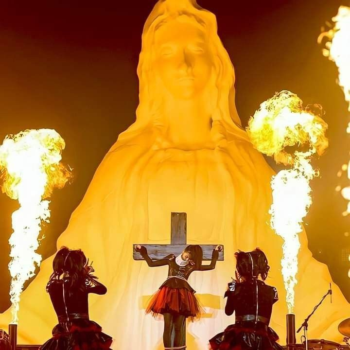
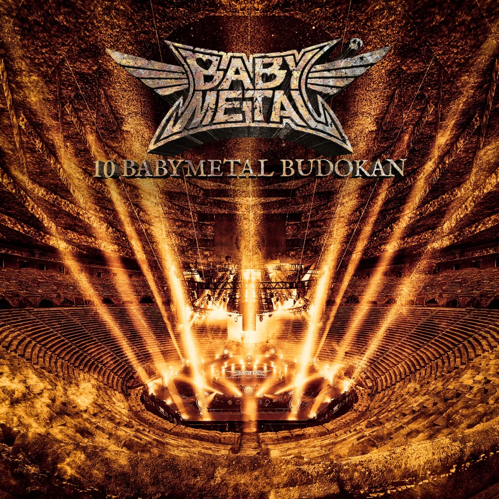
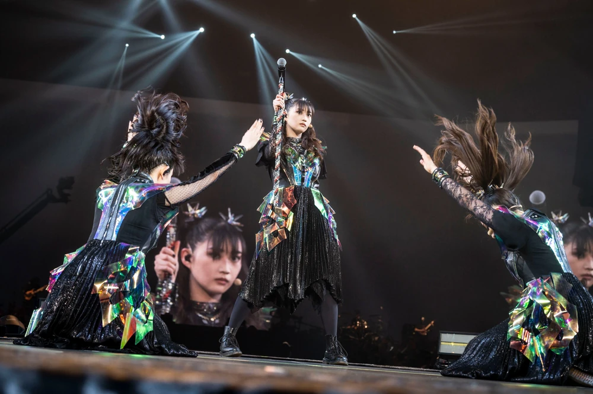
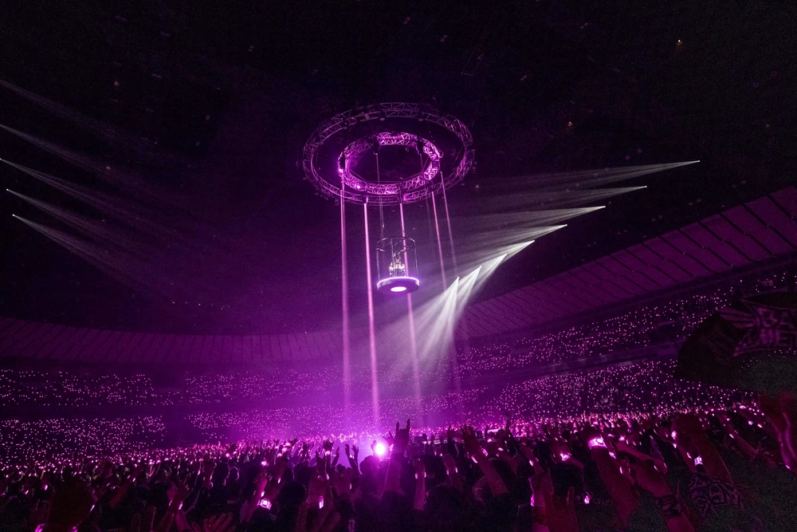
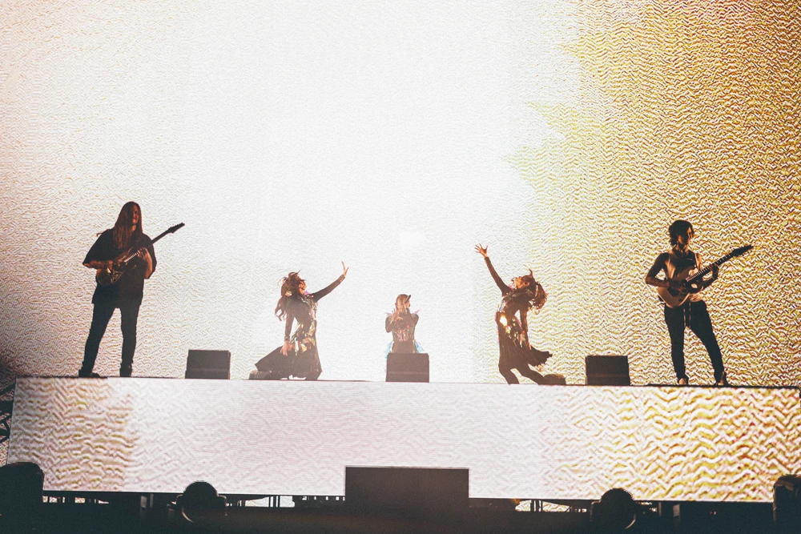
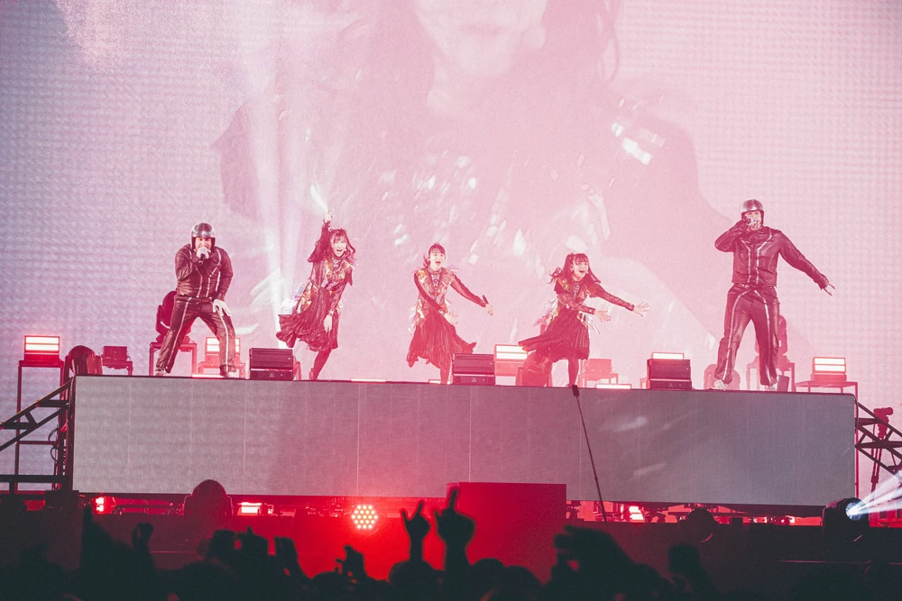
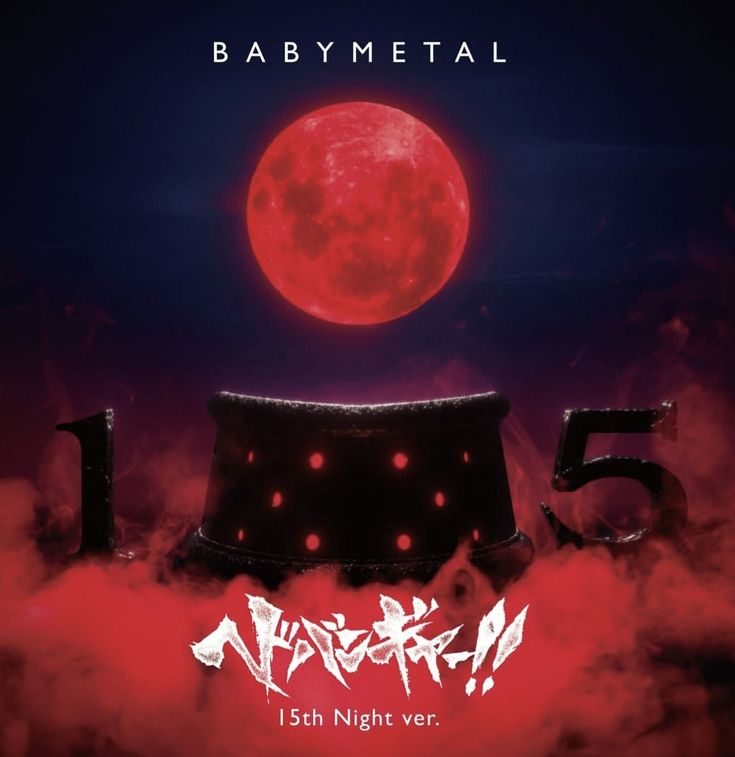
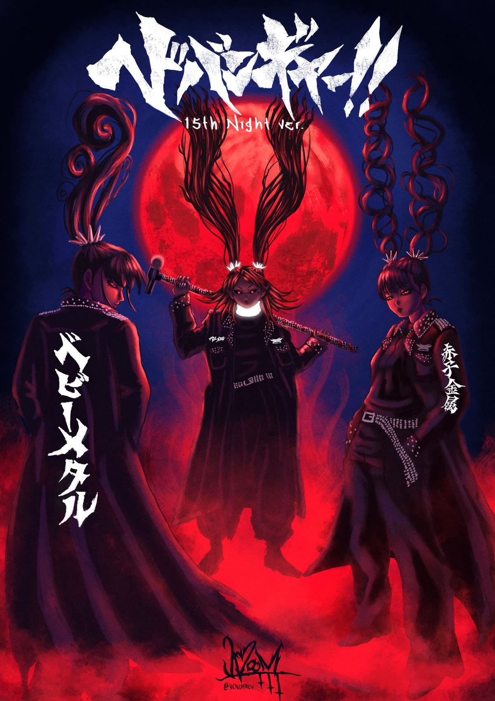

Línea de tiempo
- 2010Nace en Tokio como subunidad de metal del grupo idol Sakura Gakuin.
- 2011Publica su primer sencillo, «Doki Doki Morning».
- 2014Lanza su álbum debut «BABYMETAL».
- 2016Con el álbum «Metal Resistance» alcanza el puesto 39 del Billboard 200.
- 2018Yui Mizuno deja el grupo.
- 2019Publica el álbum «Metal Galaxy».
- 2023Sale el álbum «The Other One» y Momoko Okazaki entra como miembro oficial al grupo.
- 2024«RATATATA», junto a Electric Callboy, se convierte en uno de sus mayores éxitos.
- 2025Se publica el álbum «Metal Forth» y debuta en el puesto 9 del Billboard 200.
- 2026Se celebra «THE BIGGEST BABYMETAL TOUR EVER».
En directo: conciertos y giras






15.º aniversario (2025)


Formación musical y origen
- Escuela de talentos de la agencia Amuse Inc., donde las integrantes se formaron desde niñas en canto y danza.
- Entrenamiento continuo en coreografía para poder bailar y cantar en directo al mismo tiempo.
- Aprendizaje en escenarios junto a la Kami Band.